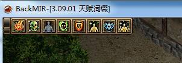
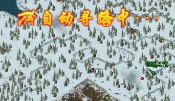
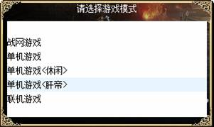
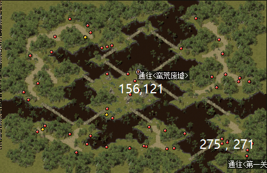
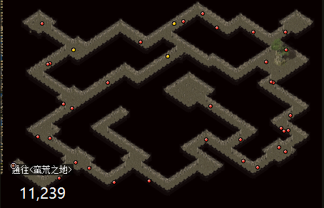
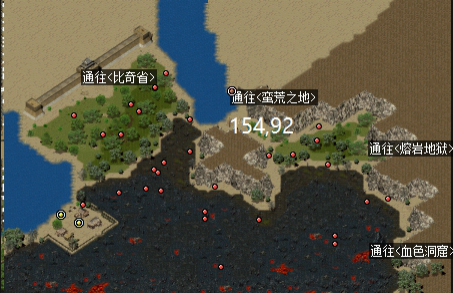
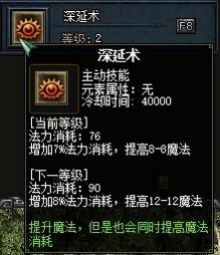

最近更新要点关注
2021.5.7
自动反击开启后寻找怪物的时间缩短了4/5。
2021.3.20
以下更新说明仅在单机版本测试，只对单机有效，战网玩家仅作为参考。
1. 客户端完整版从原来的
2. 增加了试炼塔系统，试炼塔获取荣誉可以兑换称号，称号可以在游戏中显示并能为角色增加属性加成。这个系统非常有创意，而且后期难度非常高，加之每天限挑战3次，为游戏中了可玩性和趣味性。
3. 从1星装备到8级装备，只是集齐相同品质5件，就能触发伤害增强效果，而且在右上角有明显提示。
4. 自动反击支持自动寻路（需使用
5. 在存档方式上增加了可选过图保存或不保存，设置更人性化。但默认是自动过图保存，如不需要则要手动设置。
6.单机的设置向战网看齐，更新后使用金条获得的金币在40万上下波动。
7.单机中有持久的装备（3阶以上）也需要修理才能使用（持久为零后，装备属性不再发挥作用），且修理后需要取下重新配戴才能恢复正常。
存在问题：
1.升级3.10后XP电脑无法运行游戏。
2.自动反击容易卡死或者法师及道士会攻击自己的宠物。
3.单机互看装备会引起系统崩溃。
2021.1.26
先天气功除了原有的受到攻击回血的作用外，增加了道术伤害（此作用前几个版本就有了，但这次才正常加入描述）
增加了手工手镯，支持潜能和天赋，提供了无限组合词缀技能手镯的可能。
2020.11.29
服务器程序进行了更新，重新发布了完整客户端。
1、修复伏魔令（雪）副本。
2、携带火龙之心可以皇宫副本官员处发起火龙神殿副本。
3、恢复原火龙神殿地图。
4、修复81级腕力不正常的问题。
2020.11.12
版本号从
1. 提高了调整乾坤石的爆率，会掉落的怪种类应该未增加，但提高了原有会掉落乾坤石的怪物的暴率，让获取乾坤石的机率大大增加，这也是因为后期的多星装备洗炼需求增加的需要。
2. 新增了布料系统，布料加工正式开放，按公式要求的装备进行熔炼（材料合成）可得到布缎，布缎是制作手工衣服的必需材料，工艺和难度参考宝石加工。布料加工最高等级为9级。
3. 新增了6套手工衣服，简称龙鳞新衣，装备制作有一定难度，尤其是要制作高星的衣服难度更大，但反过来想的话，这样做出来的衣服还是成就感满满的。相关星级要求和制作说明资料已经更新
4. 优化魔法冷却显示
左上角增加了一条职业技能冷却显示栏，
5. 取消黑夜黎明黄昏中的黑夜，只是取消了黑夜状态，黄昏和黎明还是存在的，也就是说眼睛会好一点了，但你仍然需要火把。
6. 悬赏任务等级上限调整为68
7. 调整悬赏任务经验奖励
8. 调整乾坤石洗炼装备金币消耗
9. 调整历史BOSS装备爆率，圣战的原话是老BOSS的暴率不能比新BOSS还低，调整的幅度是翻了一倍，这个不错，是翻倍，不是加成一倍。
10. 调整佛珠爆率，应该是提高了6号的暴率。
11. 调整破之力套装效果，调整了套装属性，破之力套增加了攻击速度+2的属性，大大提高了装备的实用性。
12. 火龙神殿改为副本，进入方式不变，但进入要求除要完成原有的任务外，还增加了副本道具――火龙之心，没有火龙之心就进不了火龙神殿了。而火龙之心不再由破天教主暴出，改由阎副本中的阎魔太子掉落。副本BOSS变成了火龙神，破天教主成了火龙神的小弟，不打败这2个小弟，你是见不到幕后老大火龙神的。
13．增加了一个副本：失落之岛，道具为：伏魔令（雪），怪物为冰川怪物，但副本的终极BOSS很关键，是获得新手工衣服制作书籍的唯一途径。
2020.10.31
继上次更新后，圣战又在10月最后一天开放了大更新！
1、开放了冰川系列地图，目前共开放了2张，分别是冰川和支柱宫，雪原→冰川，冰川→支柱宫，增加了7种全新的怪物。
2、新增破之力，魔之力，明之力套装，分别对应三职业，套装共有5件3种装备，分别是项链、手镯、戒指，装备的数量越多激活的属性越多，这次更新的套装从装备名称到套装属性，都有史诗性突破！战士套：破角、破指、破环，道士套：明镜、明光、明珠，法师套：魔坠、魔戒、魔轮，等级需求并不高。
3、新增手工头盔：龙鳞盔，属性超越天龙，而且需要以天龙头盔作为原材料，此举能有效提高天龙装备的利用率和价值。
[
昨天试放出来的吸血玩法调整引起了很大反响，最终未调整。但时隔仅一天，圣战就迅速放出了从3.0802到3.0804的更新补丁，而且还有几个是重大更新。
1、法师心心念念的补盾开放了，以后法师再也不用担心闪盾瞬间被秒了。站撸能力更强了。
2、战士的吸血设了上限12，且要吸血必须近身攻击，刀锋攻击只破防不吸血。虽然调整了吸血，但是也给了一个全新的战士技能属性，强化了金刚不坏，具体大家去看技能说明和掉落资料。
3、增加了疗伤药和魔力药。效果超过现有的特效红、蓝药。获得途径为掉落。
4、自动反击进一步完善稳定性。
5、法师增加了可诱惑的怪：冰甲虫、雪狼、寒冰雪人、寒冰战士。
[
看得出来，最近圣战有时间写代码，小更新很频繁
1、增加自动反击功能，按CTRL+T开启，开启后，角色受到怪物攻击会自动反击，法师和道如已经学了本职业的攻击技能（雷电术、灵魂火符）则使用技能能怪物进行还击，直到杀死该怪物，如受远程攻击怪物攻击，角色会移动至攻击距离内进行还击（树妖、赤月恶魔类怪物除外）。开启自动反击功能后，不能移动该角色，移动则自动取消自动反击功能。个人认为：该功能的添加主要是方便了战士挂机，法师和道士召唤宠物挂的话除了定点怪没太大用处。
2、特别说明：吸血算法最终未在此版本调整。
3、调整了 生命恢复速度增加 和 法力恢复速度增加 2个词缀的值，在上一版本的基础上增加了接近一倍，具体数据请自行尝试，攻略不提供具体值。
4、调整了技能伤害算法和技能效果。
[
国庆中秋双节的最后一天，圣战放出了新版本
除了修复若干bug和调整了部分（显示界面）外，最关键的莫过于提升了等级上限，从80级开放到85级，肝帝们又有事做了。
提升了包裹上限扩展，原来可通过3张包裹扩展凭证提升3排（24格）空间，新版本又增加了2排（16格）空间，现在的包裹拥有了10排80格，实在是杀人越货，走镖搬砖的神器。
词缀库中防具新增加了部分回复词缀。
总是来说，这次更新非常重大，毕竟新增了5级上限！
[
1、新增加自动寻路功能，在不佩戴传送戒指的情况下，TAB打开小地图，直接点击预到达的点，角色就开始自动移动，界面如下：

中途可以点击地面取消。非常适合新手和不能使用传送戒指的地图。这个功能对新手很友好！不用像当年做新手任务飞完随机跑断腿了~
2、新增加肝帝模式

更低爆率，更慢游戏进程，更多游戏乐趣，你值得拥有！
3、提升深渊卷轴效果：这个需要大家自行测试，公布了就没意思了！
4、提升法师技能深渊术的效果，提升相当大，具体看法师技能介绍。（举例：更新前6级深渊术提高 魔法为24-24，更新后变为30-30）
[
新增加了2个地图，属于雪原的后续系列，雪人洞：从雪原县进入，雪人洞窟：从雪人洞进入，可以飞传送。
2个洞刷新3种怪物：2种小怪，1种BOSS，3种怪物均掉落新增加的道具：凝晶石，作用是用来突破装备封印，提升卓越装备的属性。也就意味着以后可以人工打造史诗装备了。
雪原的BOSS雪狼兽增加掉落新道具凝晶石，另外新地图的BOSS会掉落新衣服。
新增加的地图需要完成雪原传送任务才可能到达，所以，如果等级或实力不够的小朋友仍然只能是望而兴叹。
[
1. 扩大照明类道具的光照范围
2. 新增了雪白县地图与怪物、新装备
3. 新增若干词缀
4. 增加一些地图的BOSS刷新数量以及随机位置国，从此版本起，许多地图不再适合卡BOSS。
5. 礼花添加状态提示
[
1. 新增自动喝药功能
2. 调整手工任务
3. 新增后续秘境地图
4. 新增堕落废墟怪物
5. 新增手工武器
6. 修复好友列表无法滑动的问题
7. 修复大仓库存满东西后数据丢失的问题
8. 新增一处强化白虎书籍的掉落怪物
9. 新增道具锁的功能，防止意外卖出
10. 新增月氏炼狱副本
11. 调整破天魔龙副本，调整为随机词缀怪物
11. 调整破天邪龙为携带魔龙之心后进破天魔龙副本后召唤
提醒：赤月小怪新版不掉沃玛级别的项链和戒指
版本说明（个人体验）此版本是针对3.04版本发布后吐槽爆率问题的玩家太多进行更新的，作者采纳了玩家的建议，对单机模式推出了新的休闲模式，体闲模式等于3.04更新其他功能后的3.05。正常单机模式则相当于是3.020更新其他能功能后的3.05。休闲模式和普通模式可共用存档，休闲模式下掉落的道具以物品名称的不同颜色标记。
[
1. 修复攻杀效果出现导致隔位刺杀失效的问题
2. 优化游戏模式，加入单机的普通模式和休闲模式
3. 添加扩展仓库系统
4. 添加快速商店操作。在仓库/商店打开的情况下，按住Ctrl点击相应物品可以快速存/卖出
5. 单机模式添加休闲模式，此模式为高爆模式，但是爆出的物品将会添加特殊标记
版本说明（个人体验）此版本据说是作者听了贴吧某些人不停攻击单机爆率低的问题完善的，除了正常的更新功能以外，重点是大幅度调高了怪物经验和BOSS的爆率，取消了爆率和经验烟花，取消了时空传送卷。
圣战原话：首先说一下，鉴于各种吐槽，我已经把单机定位为快餐游戏了，爆率和经验都非常高。时间多的玩家，想要体会以前感觉的，还是推荐进战网游戏。
[
1. 修复虹魔项链持久错误的问题
2. 多种天赋石添加
3. 添加天赋石合成系统（未开发完成，后续有更多途径来获取）
4. 战网：套装属性添加
5. 添加好友系统
6. 战士新增自动隔位刺杀功能
7. 降低单机模式下的难度
[
1. 调整战士技能效果
2. 战士新增一个新技能
3. 手工系统加入宝石冶炼，目前开放沃玛/祖玛/赤月装备的炼化（项链手镯戒指共同炼化），用于后期装备制作
4. 手工装备加入天赋石系统
5. 坐骑新增移动速度属性
6. 修复特定条件下金币变为负数的问题
7. 修复战士攻速过快情况下无法移动和释放技能的问题
8. 删除部分词缀
9. 取消词缀鉴定绑定
10. 调整幸运词缀属性范围
11. 调整技能伤害词缀属性范围
12. 修复客户端运行缓慢的问题
13. 修复防御词缀导致人物属性乱跳的问题
14. 仓库物品自动排序
（以下更新内容、图片均自来于群网友 无敌大炸弹 在此对他表示感谢！）
[
放在最前，
1. 增加一个新地图【蛮荒废墟】


2. 增加一个道士新技能【幽冥鬼烧】，第一本42级习得，效果为降低目标攻击力5%, 后面每级增加2%, 与法师技能类似，分为【初心】【心法】【秘笈】3本,前两本蛮荒废墟小怪爆出，后一本由蛮荒废墟boss爆出。
3. 新增多个无用词缀污染词缀库，追求某系词缀的建议在老版正好后再进新版。
以下表格为新增词缀，均为自行测试，不确定是否为全部。
|
手镯 |
|
戒指 |
|
项链 |
||
|
|
|
|||||
|
单一技能等级+1 |
|
冷冻躲避 |
|
魔法躲避 |
||
|
百分比增加技能伤害 |
|
中毒恢复 |
|
|
||
|
|
|
|
杀怪经验增加 |
|
|
|
|
|
|
|
石化恢复 |
|
|
|
|
|
|
|
石化躲避 |
|
|
|
|
|
|
|
毒物躲避 |
|
|
|
|
|
|
|
冷冻恢复 |
|
|
|
[
1.
增加一个新地图【蛮荒之地】，从第一关外进入

增加一个法师新技能【深延术】，第一本51级习得。
分为1-2级【初心】(4-4, 8-8)
3-4级【心法】(12-12, 16-16)
5-6级【秘笈】(20-20, 24-24)3本书
其中前两本由蛮荒之地小怪爆出，最后一本由boss兽王爆出。

3. 藏宝图改成副本形式，在皇宫内npc处对话进入。注：需要创建队伍(回车输入@createteam)。
[
(新旧版之间区分方法：在单机环境游戏内按回车发一句话，在下面对话框内能看到自己的话，即为新版)
1. 月氏地狱boss【月氏战魔】增加【先天罡气】掉落。